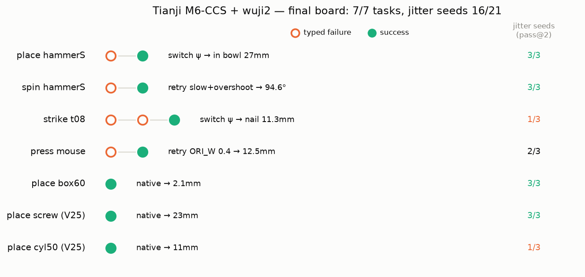
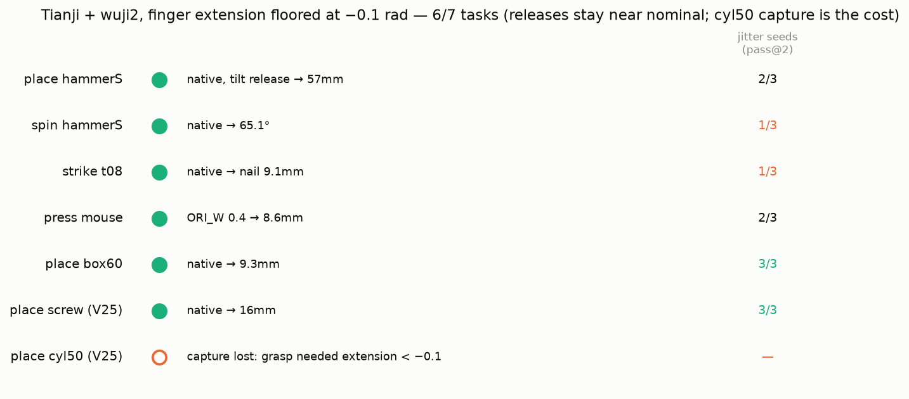

The desktop Tianji Marvin M6-CCS arm (HandsOn external asset, pedestal mount at x=-0.66) replaces the overhead ROKAE, carrying the same wuji2 hand and the same frozen S0 policy — the robot include keeps ROKAE's joint/body naming so cosim, sensors and actuators run unchanged. Every result below was produced by the online actor: sweep-ranked candidate calls, typed-failure retries (never an unchanged call), switch, atlas write-back.

place 27mm · spin 94.6° (threshold 55) · strike 11.3mm nail drive (threshold 6; the ROKAE-era best was 6.2) · press 12.5mm click · box60 2.1mm · screw 23mm and cyl50 11mm under the V25 engine — both objects no arm ever placed before.
Place/spin capture under yaw jitter — the yaw-aligned reference swings the approach to the arm's reach margin; soft PD lags and S0's fingers close 40 ticks late (verified causal knob: approach stiffness). Fix: phase-scheduled gains until grasp+30, stock afterwards, now a route lever.
Fouled spawns — jitter settled the hammer's head on the bowl rim; the lift hooked the bowl
and the goal itself moved. Fix: settle-tilt gate (SPAWN_FOULED), live-bowl replan
(GOAL_MOVED), and length-based spawn anchors (long objects spawn farther from the bowl).
Strike was a branch lottery — dozens of swing candidates all IK to "perfect 0mm"; argmin on float noise drew steep branches that fail open-loop (a numerically no-op mass change flipped the outcome). Fix: deterministic selection (shallow elevation, minimal reorientation from the measured carry), overhead approach, and a pre-stroke re-measure that shifts the aim (fired at 29.5mm off-line).
Replan jerk — an 84mm step in the wrist reference flung an end-gripped cylinder. Fix: ramp the shift over 40 frames.
| mechanism | evidence | |
|---|---|---|
| kept | sweep pre-check | control run at the rejected ψ=0 (347mm swept err) fails exactly as predicted |
| kept | typed retries | converted hooked-release ×2, strike choke, press ORI_W ×2, measured-CORRECT ×2, spin combined (94.6°) |
| kept | switch | won place (ψ−150→−120), strike (ψ−150→−120), box60 (ψ−120→−90) |
| kept | atlas prior + scene_rev | stale cells from a superseded scene demonstrably misled ranking; rev-gated now |
| dropped | spin SQUEEZE route | bit-identical retry metrics — an unchanged call |
| corrected | 5cm CORRECT cap | broke a winning 6.7cm correction → 8cm (the disturbance bound) |
| corrected | always-on stiff approach | fixed hammerS jitter capture, perturbed box60's <±30mm basin → route lever, default on |
| corrected | full-offset CORRECT, round 2+ | fingertip response ≈2–3× per unit; half-gain when retries bracket zero |
Per request, the wuji2 flexion joints (15 per hand: cmc_flex, mcp, ip, mcp_flex, pip, dip) are limited to −0.1 rad extension in the generated includes (joint range + ctrlrange); abduction joints keep their range — S0 holds objects at thumb cmc_abd ≈ −0.37, so flooring those would break grasping. The hyperextended splay release is gone; in its place the hand tilts 35° over the bowl at the drop dwell (REL_ROLL) so gravity frees the object, then slides away. Verified: place lands 13–16mm from the bowl center, better than the splay's 27mm.

Measured cost of the clamp (same actor, same scenes): cyl50's V25 edge-grip capture is lost (the scoop needed extension past −0.1) and jitter robustness drops on spin (3/3→1/3) and place (3/3→2/3) — S0 uses small extensions when shaping the grasp. box60 (3/3), screw (3/3), strike (9.1mm) and press (8.6mm) are unaffected. A −0.3 floor would likely recover cyl50/spin if a middle ground is acceptable.
strike seeds 1/3 — grasp holds (64%) but the swing stays 1.7–3.1mm shallow under ±1cm/±8° jitter even after the re-measure correction; residual is wrist-orientation shortfall in the stroke itself. cyl50 seeds 1/3 — the V25 edge-grip on an upright cylinder is pose-sensitive; nominal is solid (11mm) but jittered grips capture-miss or drop mid-carry. Both carry full evidence bundles in the atlas. ~120 episodes total for this campaign; each ≈25s.
Engines never mixed: m8000 and V25 run behind the same episode interface
(ENGINE=v25). Scene revision tj4; all atlas cells are rev-tagged.